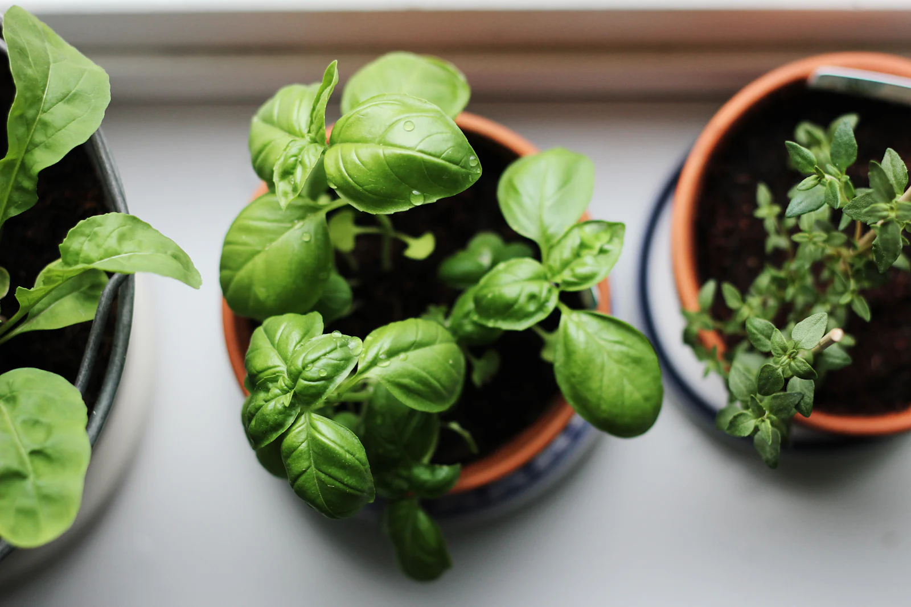
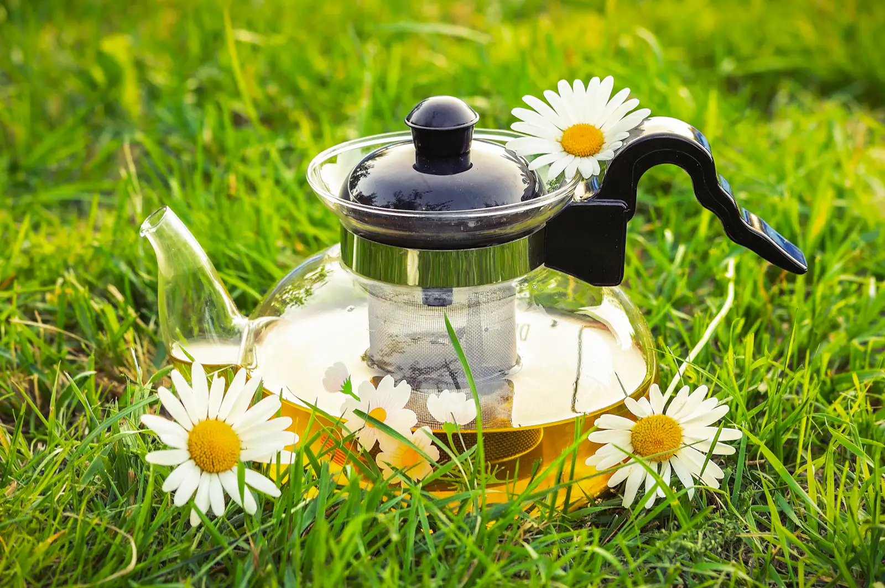
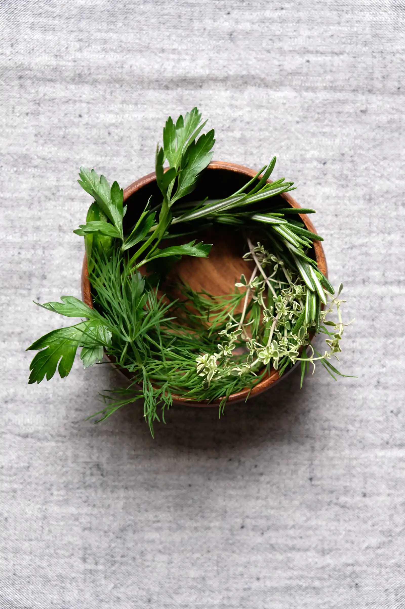
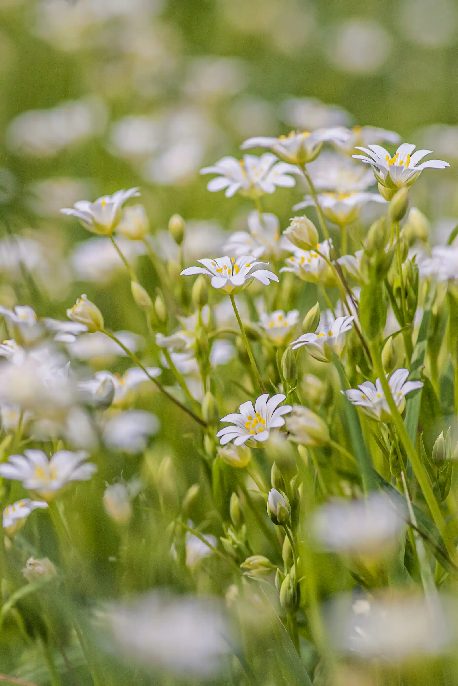
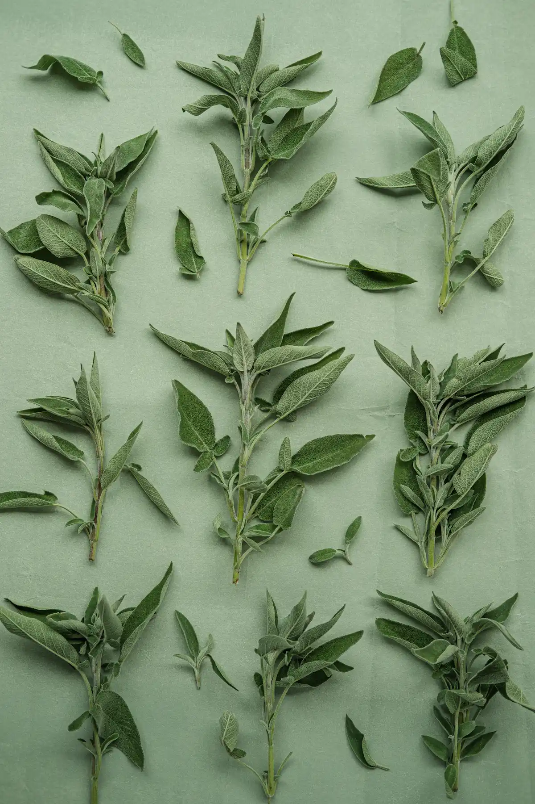

I
Le premier rendez-vous
Ici, comment se passe votre accueil, ce dont vous parlez ensemble la première fois.

Naturopathe à Paris 5
Cette « science de la vie » a pour objectif d’établir et de maintenir le bien-être, sur le plan physique autant que mental.

01L’approche
Dans cette dernière technique, l’usage des filtres et lumières colorées permettent au niveau énergétique d’amener un changement de fréquence et une restauration de l’énergie vitale dans l’organisme.
D’avril à septembre, je propose des "bains de forêt" et séances de SYLVOTHERAPIE qui offrent l’occasion d’expérimenter l’accompagnement que nous offrent les arbres vers la reconnexion à soi-même et à la Nature.
J’ai également étudié le massage ayurvédique selon l’approche de l’Inde du Nord (Rajeev Pant, Yogsansara).
PRESENTATION Je propose divers types de séances : La NATUROPATHIE permet de prendre soin de soi par des moyens naturels : hygiène de vie, alimentation, plantes médicinales, huiles essentielles, respiration, harmonisation des émotions, exercices physiques, hydrothérapie…
02La séance
Ici, vos séances racontées avec vos mots. En attendant, voici la forme qu’elles prendront.

Ici, comment se passe votre accueil, ce dont vous parlez ensemble la première fois.

Ici, le déroulé d’une séance, à votre façon : sa durée, son rythme, ce que l’on y fait.

Ici, ce que vous proposez ensuite : le suivi, le rythme des rendez-vous.
03Ce que ça peut apporter
Apprendre à accueillir ce que vous ressentez, à votre rythme.
Clarifier ce qui compte pour vous et avancer.
Les accompagnements proposés relèvent du bien-être. Ils ne remplacent en aucun cas un avis, un diagnostic ou un traitement médical.
Ici, le détail de vos formules
Première séance, suivi, forfaits, bons cadeaux : chaque tarif aura sa ligne, comme vous le souhaitez.
05À propos
En outre, j’ai étudié l’ayurvéda auprès du médecin sri-lankais Vaidya Chethu Weerasinghe dans le cadre de l’European College of Integrative Medicine (ECIM). L’AYURVEDA est le système traditionnel de santé en vigueur en Inde depuis des millénaires.
Il est reconnu comme «méthode de soin » par l’Organisation Mondiale de la Santé depuis 1982.
Par ailleurs, j’ai écrit le "GUIDE DE LA PHYTOTHERAPIE AU QUOTIDIEN" (publié aux Editions Rustica en 2019, réédité en juin 2022) afin de permettre à chacun de se familiariser avec les plantes médicinales et leurs usages.
Karine Jacquemard
L’ayurvéda s’appuie sur différents piliers : alimentation, phytothérapie, yoga, notamment, parmi lesquels le massage est considéré comme une pratique fondamentale pour conserver un état de santé optimal.
Ici, les mots de vos consultants
Les avis que vous avez déjà reçus pourront être repris ici, avec votre accord.
06Questions fréquentes
À Paris 5, sur rendez-vous.
Par téléphone, au 06 88 23 65 35.
Non. Les accompagnements proposés relèvent du bien-être. Ils ne remplacent en aucun cas un avis, un diagnostic ou un traitement médical.
07Contact et rendez-vous
Dites-moi ce qui vous amène, et nous trouvons ensemble le créneau qui vous convient.
06 88 23 65 35Appeler maintenantIci, l’adresse exacte de votre cabinet
Avec un plan d’accès et les indications pour venir.